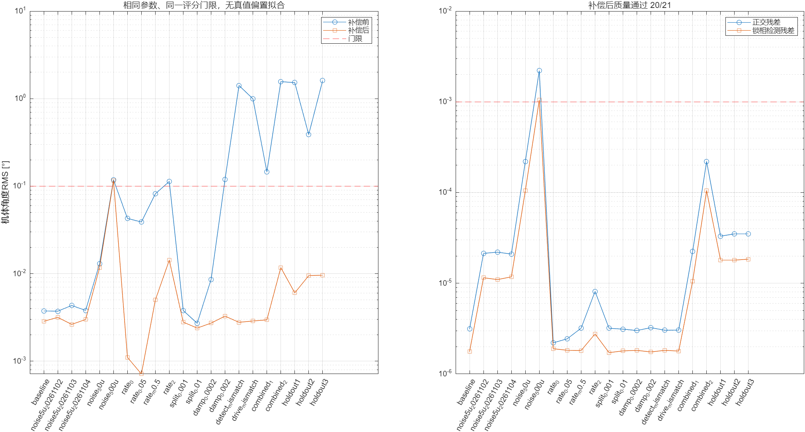

独立合成标定/张量参考，不是硬件自动辨识。点击工况查看同一质量面板。

| 工况 | 之前角度RMS | 之后角度RMS | 通过 | 未通过项 |
|---|---|---|---|---|
| 基线 | 0.00375707 | 0.002855184 | 1 | |
| 5μV噪声独立种子 | 0.003724286 | 0.003165193 | 1 | |
| 5μV噪声独立种子 | 0.004329689 | 0.002631374 | 1 | |
| 5μV噪声独立种子 | 0.003802605 | 0.002994819 | 1 | |
| 50μV噪声 | 0.01297871 | 0.01168901 | 1 | |
| 500μV噪声 | 0.1181853 | 0.1159673 | 0 | quadrature,PLL_detector,body_angle |
| 0rad/s输入 | 0.04276455 | 0.001104807 | 1 | |
| 0.05rad/s输入 | 0.03894347 | 0.0007138664 | 1 | |
| -0.5rad/s输入 | 0.08170103 | 0.004999051 | 1 | |
| 2rad/s输入 | 0.1130849 | 0.01426492 | 1 | |
| 0.001Hz频裂 | 0.003791957 | 0.002794564 | 1 | |
| 0.01Hz频裂 | 0.002712465 | 0.002387646 | 1 | |
| 0.0002/s阻尼半差 | 0.008595645 | 0.002723348 | 1 | |
| 0.002/s阻尼半差 | 0.1197775 | 0.003271124 | 1 | |
| 检测标定±1%/±0.5°失配 | 1.413948 | 0.00277855 | 1 | |
| 驱动标定±1%/±0.5°失配 | 0.9948379 | 0.002878655 | 1 | |
| 组合非理想等级1 | 0.1457505 | 0.002965157 | 1 | |
| 组合非理想等级2 | 1.563905 | 0.0117295 | 1 | |
| 独立留出工况1 | 1.523323 | 0.006040863 | 1 | |
| 独立留出工况2 | 0.3894985 | 0.009480081 | 1 | |
| 独立留出工况3 | 1.609602 | 0.009619997 | 1 |